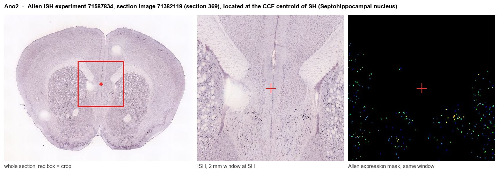
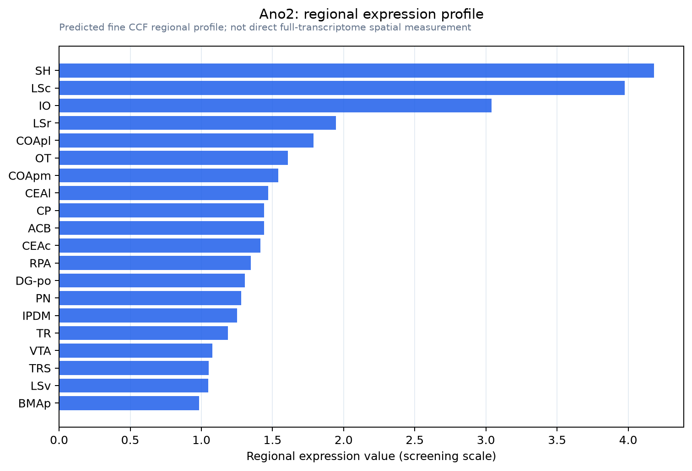

Ano2
Anoctamin-2 (Transmembrane protein 16B)
Spatial tier: RESTRICTED · Class: ION_CHANNEL · Top region: SH (Septohippocampal nucleus) · Positive regions: 21/554
45.9Discovery Score
42.9Targetability Score
CEvidence grade C
What this means: Ano2: fine CCF profile is restricted toward SH (top regions: SH, LSc, IO, LSr, COApl; 21 positive regions); direct spatial validation is still required.
Function in SH: evidence, prediction, innovation
- Gene function
- Ano2 encodes anoctamin-2 (TMEM16B), a calcium-activated chloride channel. In olfactory sensory neurons it amplifies the cyclic-nucleotide-driven transduction current by letting chloride flow out of the cilium. More generally it converts a local calcium rise into a chloride current that is depolarising or shunting depending on the chloride gradient, and so shapes spike timing, firing rate and even axonal targeting.
- Region function
- The septohippocampal nucleus is a small cell group at the dorsomedial tip of the septum, continuous with the medial septum and diagonal band; the septohippocampal system it belongs to paces hippocampal theta rhythm through cholinergic and GABAergic projections that gate memory encoding and arousal.
- Published in this region
- inferred No region-specific literature found. TMEM16B function has been defined almost entirely in olfactory and vomeronasal sensory neurons and photoreceptor terminals: it shapes the olfactory response time course (Reisert 2024), regulates action-potential firing and axonal targeting (Pietra 2016), and underlies the classic calcium-activated chloride current of olfactory transduction (Pifferi 2012; Dibattista 2024). Its septal expression has not been characterised.
- Predicted function
- Prediction: in septohippocampal neurons TMEM16B would act as a calcium-activated chloride conductance recruited during bursts, either sharpening spike afterpotentials or shunting excitation depending on the local chloride gradient, and so tuning the rhythmic pacemaker firing that entrains hippocampal theta. Septum-restricted Ano2 deletion is predicted to alter theta frequency and power and to degrade the spike-timing precision of septal pacemaker cells, with downstream effects on hippocampus-dependent memory, rather than to silence the neurons. Local Ani9 or T16Ainh-A01 should reproduce the acute effect.
- Innovation
- ★★★★★ 5/5 A calcium-activated chloride channel has never been examined in septal theta pacemakers even though chloride-dependent shunting is central to how those cells work, and knockout mice and blockers exist.
- Tools
- Ano2 knockout mice from the olfactory literature; TMEM16 blockers niflumic acid, T16Ainh-A01 and Ani9 (limited ANO1/ANO2 selectivity); anti-ANO2 antibodies; septal cell types accessible with ChAT-IRES-Cre (JAX 006410), Pvalb-IRES-Cre (JAX 017320) and Vgat-IRES-Cre (JAX 016962).
- References
Direct evidence located at the region

Allen ISH experiment 71587834, section image 71382119 (section 369): the section that contains the CCF centroid of Septohippocampal nucleus according to the Allen image-to-atlas alignment (reference_to_image), with a 2 mm window around that point. Left: whole section, red box = window. Middle: ISH signal. Right: Allen's expression-mask view of the same window. open this image in the Allen viewer
Look it up yourself: Allen Mouse Brain ISH for Ano2Allen reference atlas: SH (structure 333)ABC Atlas MERFISH viewer(in the ABC Atlas choose dataset MERFISH-C57BL6J-638850-CCF, colour cells by gene "Ano2" or by parcellation_substructure "SH")All genes confined to SH + 3-D brain
Direct spatial evidence
MERFISH REGION LOCATOR

Regional expression figure

Predicted WMB × fine-CCF profile; not direct full-transcriptome spatial measurement.
Spatial profile
Evidence and specificity
- Evidence status
- PREDICTED_FINE
- Direct sources
- None; predicted localization only
- Exclusive threshold
- 12 positive regions out of 554
- Spatial specificity
- 0.343
- Top-region fraction
- 0.072
- Filter status
- PASS
Interpretation limits
- Cell-type-to-region projection is imputed expression, not direct spatial measurement.
- Adult reference atlases do not establish stability across age, sex, strain, state, or disease.
- Transcript abundance does not guarantee protein abundance or genetic-tool performance.